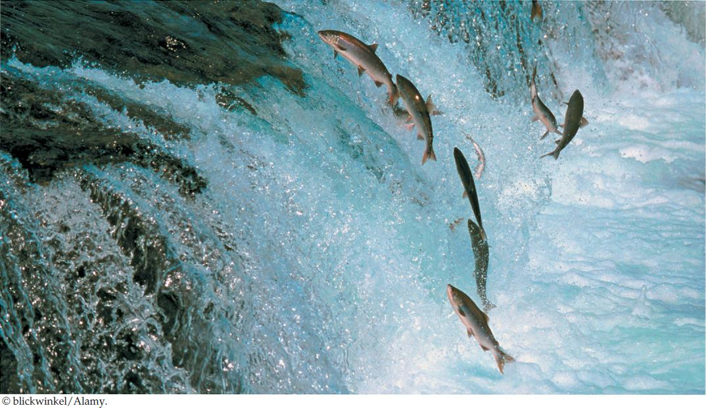

| 36 | Water and Salt Balance |
|
KEY CONCEPTS
36.1Kidneys Regulate the Composition of the Body Fluids 36.2Nitrogenous Wastes Need to Be Excreted 36.3Aquatic Animals Display a Wide Diversity of Relationships to Their Environment 36.4Dehydration is the Principal Challenge for Terrestrial Animals 36.5Kidneys Adjust Water Excretion to Help Animals Maintain Homeostasis |

Salmon migrate between fresh water and the ocean. These Atlantic salmon spent the last few years in the ocean. To spawn, they now are swimming upstream to reach suitable spawning areas in the very river where they were conceived.
|
Salmon are amazing as they jump up waterfalls during their travels upstream. But even more amazing is something we don’t see: the concentration of salts and water in their blood plasma stays almost constant as they migrate between the salty oceans and freshwater rivers. We humans can swim in the ocean or fresh water without upsetting our internal water and salt balance, because our skin does not allow water or salts to diffuse through it. However, fish are different. Some of their outer body surfaces—such as their gills and mouth membranes—are permeable to water and salts. To get oxygen, fish need gills that are highly permeable so that O2 can diffuse easily into their blood from the water in which they swim. Gills that are highly permeable to O2 are also highly permeable to water and salts. The blood plasma of fish can therefore gain water from or lose water to the surrounding environmental water by osmosis, and it can gain or lose ions by diffusion. For these reasons, fish do not resemble us in the way they relate to the water and salts in their surroundings.
The blood plasma of salmon is about one-third as concentrated with salts as seawater. Each individual salmon starts life in fresh water, where its blood is far more concentrated than the environmental water in which it swims. During this stage of life, the salmon gains water by osmosis from its surroundings and loses salts by diffusion to its surroundings—processes that tend to dilute its blood. Later, the salmon migrates into the ocean, where its blood is far less concentrated with salts than its environment. During the years it lives in the ocean, it gains salts by diffusion from its surroundings and loses water by osmosis to its surroundings—processes that tend to make its blood become more concentrated.
Osmosis is relentless, whatever its direction. It carries water into or out of a salmon during every hour of the animal’s life. Similarly, whatever the direction of salt diffusion, it too is relentless.
How, then, can the concentration of the blood plasma remain almost constant throughout a salmon’s life? The salmon has mechanisms that allow it to control the concentration of its blood plasma. These cost energy, and they must be properly regulated by the nervous and endocrine systems.
Salmon dramatically illustrate homeostasis: stability of the internal environment (see Concept 29.3). For most cells in a salmon’s body, the type of water in the fish’s external environment—whether fresh water or seawater—is of almost no consequence. This is true because the cells are bathed by the tissue fluids, which are similar to blood plasma and therefore almost constant in composition. Because of this stable internal environment, the cells enjoy independence of the external environment.
How can a salmon keep the composition of its blood plasma stable regardless of whether it is swimming in seawater or fresh water?